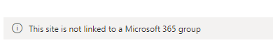
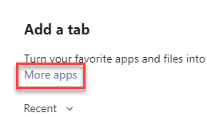
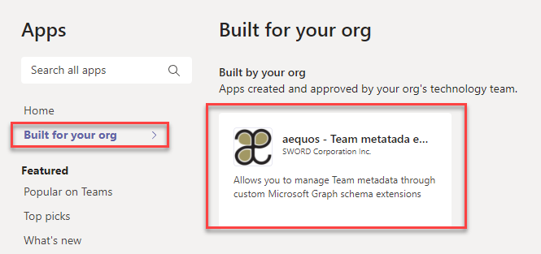
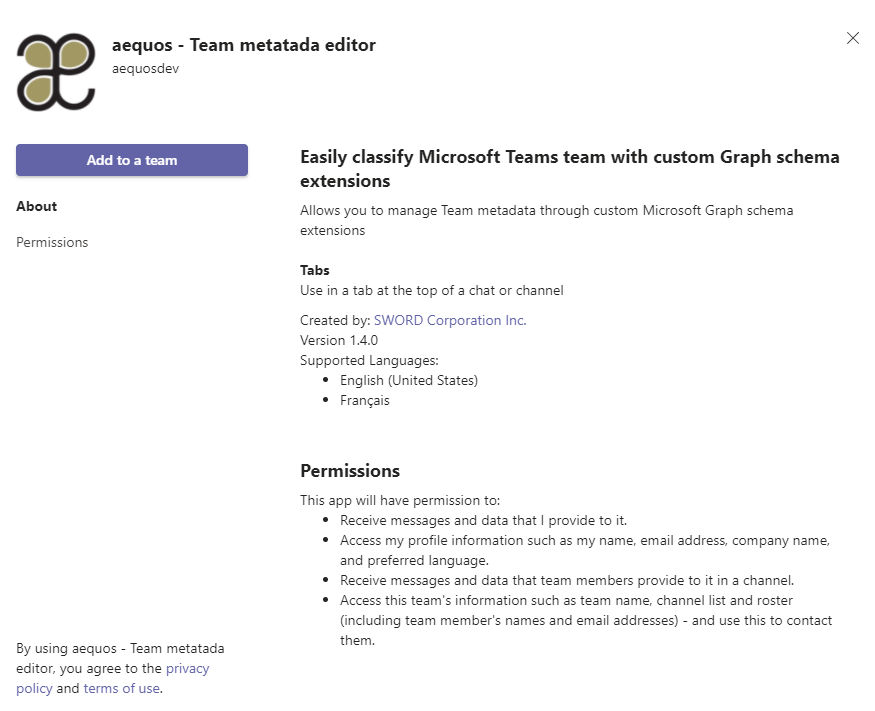
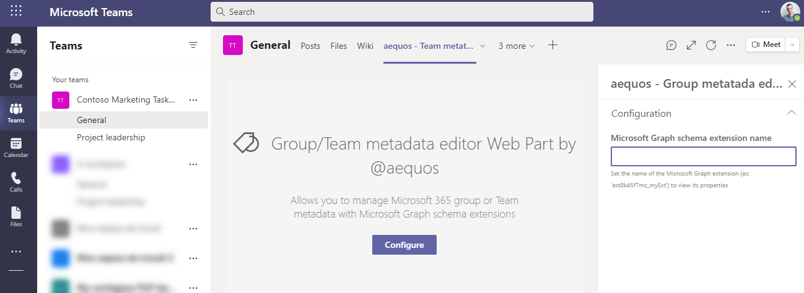

Group Metadata Editor¶
This Web Part is available since the
1.4.0version.
The 'Group/Team metadata editor' Web Part allows you to tag a specific Microsoft 365 group or team using a custom Microsoft Graph schema extension. This Web Part can be used in a regular SharePoint page or as a team tab in Microsoft Teams with the provided application (see Installation for more information).
Although it can be used alone, we designed this Web Part to fully complete the search experience and provide an end-to-end solution with other MDV components when used to build a team search center in Microsoft Teams. See this tutorial to know how you can leverage this component at its full potential.


Note
- This Web Part can only be used in a SharePoint team site connected to a Microsoft 365 group and/or in a tab in a Microsoft Teams team. A warning message will be displayed otherwise:

- Only an owner of the underlying Microsoft 365 group can configure schema extension properties.
Configuration¶
The Microsoft Graph schema extension must be created before using this Web Part. As a tenant administrator, you can use Microsoft Graph explorer and this procedure to create an extension.
The Web Part supports the following property data types:
StringIntegerDateTimeBoolean
Usage in a SharePoint site¶
-
In a SharePoint team site connected to a Microsoft 365 group, open or create a new page.
-
Add the "aequos - Group metadata editor" Web Part on the page and set the schema extension name.

Usage in a team in Microsoft Teams¶
-
On a team channel, add a new tab and click on "More apps". If correctly deployed by your administrator, you should see the "aequos - Team metadata editor" application listed in your organization applications.


-
Go through the process to add the application as tab:


-
Configure the component settings the same way as the SharePoint Web Part:
